The Tuffcluff family is gargantuan. This can cause a lot of problems (like remembering birthdays) but it has its advantages too and we thought it was about time to capitalize on our advantages so we enlisted the
expertise of Tuffcluffs the world over to create this cult guide to everything that is nice and good. It's essentially a shopping guide for the products that we think are fantastic - the best of the best. And if you know a Tuffcluff, you know that we like to get a good deal! This list is a work in progress, so if you have a tried and tested product to add please let us know.
FOOD
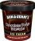
What: Ben & Jerry's Chocolate Fudge Brownie Ice Cream
Who: Edward
Why: It's not pompous like "Haagen-Dazs" (a made-up name by a Europhile from the Bronx) and it has big chunks
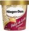
What: Haagen-Dazs ice cream
Who: Shira
Why:
What: Rainbow Sherbet (Publix, a southern supermarket, brand)
Who: Soren
Why: The flavors aren't all mushed up together like some other brands
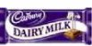
What: Cadbury's Chocolate (the English version ONLY! American Dairy Milk is made by Hersheys - yuck!)
Who: Scott
Why: It's the best. Dove milk chocolate is the best American substitute
Who: The Lanyons
Why: The best basic, everyday chocolate in the world!
What: Mounds candy bar
Who: Mel
Why: Yummy!
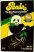
What: Panda Black Licorice
Who: Daisha
Why: The softest and nicest black liquorice I've tried
What: Phillipine brand dried mangoes
Who: Tasha
Why: Not the cheapest, but the best snack for a little naturally sweet energy
What: Special K protein plus
Who: Mel
Why: Low cal and rather filling. Highest rating on NutritionData.com
What: Barbara's Shredded Oats
Who: Shira
Why:
What: Post Grape Nuts
Who: Scott
Why: No generic brand gets it right
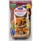
What: Quaker 100% Natural Granola
Who: Hyrum
Why: Because it tastes good and it�s crunchy and hard
What: Everything bagels, with all the seeds and onions on top
Who: Soren
Why: Yummy!
What: Yami Yogurt
Who: Shira
Why:
What: Tayberry Jam
Who: The Lanyons
Why: A Scottish blackberry and raspberry cross. Karen introduced this to us and we've been hooked ever since. Good luck finding it though, we only live 8 hours from the Tay river and still have to kill ourselves finding it.
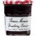
What: Bonne Maman Strawberry Conserve
Who: Daisha
Why: The most delicious strawberry jam ever. It's French, so it might be hard to find in the USA.
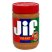
What: Jif Peanut Butter
Who: Hyrum
Why: I don�t know. I just like it and I stay with things I like
What: Maris Piper Potatoes
Who: The Lanyons
Why: We make roast potatoes every Sunday and have tried every kind. These are potato perfection.
What: Tostitos
Who: Soren
Why: Absolutely the best
What: Pace Picante Sauce
Who: Daisha
Why: Great all-round salsa with simple, natural ingredients. I always stock up when I visit the USA.
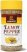
What: Lawry's Lemon Pepper
Who: Daisha
Why: Nice on corn. Something else I stock up on when I visit the USA.
What: Dad's corn bread
Who: Shira
Why:
What: Thai Kitchen hot and sour soup
Who: Shira
Why:
What: Annie's mac and cheese
Who: Shira
Why:
What: McDonald's chicken nuggets and french fries
Who: Shira
Why:
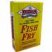
What: Louisiana Fish Fry
Who: Mel
Why: What real Southerners use on their catfish, but it's good any any fish!
What: Swiss Miss Diet Hot Chocolate
Who: Mel and Daisha
Why: The only low-cal hot chocolate that tastes remotely good
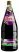
What: Ribena
Who: Edward, Scott, Dakota, Diana, Soren, Dennis
Why: Who knew blackcurrant juice could be so nice
What: Redbull
Who: Tasha
Why: Tastes better off the shelf - without this I would have never made it through the first year of law school
What: "Lechita" (kirkland signature organic vanilla soymilk)
Who: Dru
Why: Without this life would be meaningless
KITCHEN STUFF
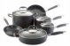
What: Hard anodized pots and pans
Who: Mel
Why: Quick, even heating and durable
Who: Tiana
Why: In my household appliances class in college we tested a whole range of pots and pans and the hard anodized beat everything.
Who: Tasha & Steve
Why: We got ours cheap at Costco 3 yrs ago - they still look brand new
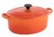
What: Le Creuset Cast Iron Casserole
Who: Daisha
Why: The most durable, versatile, lovely piece of cookware I own. Plus it's super easy to clean.
What: Pampered Chef garlic press
Who: Mel
Why: you don�t have to peel the clove first!
What: Pampered Chef bowl scraper
Who: Mel
Why: Great in the kitchen and beyond, like getting sharp creases in folded cardstock and more.
What: Smart Cook Knives
Who: Tasha
Why: They might be hard to find...I found them at the dollar store; black handle - blade goes all the way through the handle, start sharp; stay sharp; resharpen nicely; best price!
What: Reynolds Oven Bags
Who: Mel
Why: This is our secret for a juicy Thanksgiving turkey.
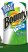
What: Bounty select-a-size Paper Towels
Who: Tiana
Why: You can rip off a small piece, or keep a couple of pieces together to make a larger towel. Each small section does the job of at least 3 or 4 full-
size cheap towels. They last longer because I�m usually only needing to use a small towel rather than a full-size one. I won�t buy a paper towel that
doesn�t give me select-a-size options now. Not even regular Bounty.
What: Electrasol power tabs
Who: Tasha
Why: These have jet dry; can use them even when they look nasty/old; they're pretty cheap at costco and they last forever! Nothing compares if you have a dishwasher
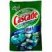
What: Cascade with Dawn dishwashing packets
Who: Tiana
Why: My dishes are always sparkling clean and there�s no messy powder or liquid to spill. Just make sure you don�t overload your dishwasher because nothing
can clean dishes that are packed together, and it�s always a good idea to pre-rinse, especially if the food is dried on. Warning: If you buy them in the
re-sealable plastic bag, make sure you double-check the seal after closing it because it�s a difficult one the zip shut and the packets will dry out and not
work as well. I like buying the economy size because it has a plastic box with a flip top lid, so it�s always closed properly.
What: Method dish soap
Who: Tasha
Why: Smells like cucumber (best "clean" smell there is); the only dish soap that doesn't make my hands freak out and it has this really cool twist/screw top that works better than any other
What: Ziplock freezer bags
Who: Tasha
Why: These are great and re-usable. You can label with a sharpie and then rinse out, scrub and refill/re-label. Because they're "freezer" they're really tough and last a long time
HOUSEHOLD STUFF
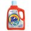
What: Tide laundry detergent
Who: Tiana
Why: I�ve always wanted yummy smelling laundry, and I hate dingy whites. Aunt Judy�s laundry always looks and smells great, and she uses Tide, so I tried
it after years of cheap-o detergents and I can�t go back. There is a noticeable difference!!!
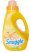
What: Orange scented fabric softener (I�m currently using Snuggle fabric softener- orange rush scent only!)
Who: Tiana
Why: I�m obsessed with orange citrus scented cleaning products. I love them! I have to have fabric softener because few things in life drive me crazier
than static and itchy fabrics, so I picked this brand because it was the only one with orange scent at the time. I love anything citrusy! It makes you feel
cheerful while you do the drudgery of cleaning and washing.
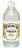
What: White vinegar/distilled vinegar (any brand)
Who: Tiana
Why: My new fabric softener of choice (I learned about using it on TV from Sara Snow), and I�ve been trying to go more natural. It�s cheap too! The only thing is it has no static protection, so you�ve got to use dryer sheets in the dryer! I thought I�d miss my citrus softener, but I don�t. You can also use it in your dishwasher for rinse aid instead of jet dry.
What: Bosch Dishwashers
Who: Daisha
Why: I'm a lazy cleaner and need something that will do all the hard work for me, and that's what my Bosch Clasixx does! I'd never use anything else now that I've owned one.
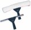
What: A squeegee and the fluffy cleaning tool (looks like a furry squeegee) for cleaning windows
Who: Tiana
Why: I saw that�s how they clean the store windows at Disneyland. Dad had one from his window cleaning days in Lake of the Pines, so I tried it. It�s fast
and leaves the windows incredibly clean with absolutely no streaks. You wipe in one fluid motion, never lifting the squeegee from the glass until the final
wipe across the bottom part of the glass. Windex, vinegar, newspaper, etc all seem to leave streaks and I�m never satisfied. You will never go back after
trying this method.
What: Rain-X
Who: Daisha
Why: This really helps when you live in such a rainy place. The Anti-Fog spinoff is great for the interior and okay on my bathroom mirrors.
What: Sherwin Williams paint
Who: Scott
Why: It�s the best
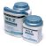
What: Kilz paint
Who: Mel (Tiana uses it too)
Why: No, this is the best!
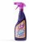
What: Cillit Bang (power cleaner)
Who: Daisha
Why: I'm a lazy cleaner and like a product to do all the work for me so I don't have to sit around scrubbing. I'm not sure if it's available in the USA but this stuff is THE BEST (despite its lame-o name). I use it for almost everything. We have limescale from our hard water and I'd never use anything else to tackle it but the Bang.
BATHROOM CABINET
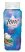
What: Tone Exotic Fusions Body Wash (water lily & sugar cane, or Tahitian vanilla & orchid)
Who: Tiana and Hyrum
Why: Perfect lather, great fragrance that works for him or her, perfect consistency, nothing else compares! Even great for shaving legs and pits!
What: Garnier Fructis shampoo & conditioner
Who: Shira
Why:
Who: Cage
Why: Makes my wild hair smooth, shiny and smell good
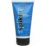
What: ICE Spiker styling glue by Joico
Who: Hyrum
Why: The hold is strong and it works better than other products I�ve tried
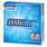
What: Crest Whitestrips
Who: Daisha
Why: I used these before my wedding and my teeth were almost too white! Mel has used them too with great results
What: Sonic Care toothbrush
Who: Steve
Why: It does all the work and lasts forever - never going back to manual!
What: Dove cool moisture soap
Who: Tasha
Why: Smells the best, works the best, has same power that puffs plus has - magic lotion?
What: Nivea Aqua Cool Deo Spray (for men)
Who: Daisha
Why: Edward and Dakota have been using this for a few months but I'm the one who loves it! It smells so good and works for AGES!
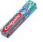
What: Colgate Fresh Confidence toothpaste
Who: Tiana
Why: It�s a gel (I hate pastes), it has just the right amount of foaming, it has a great flavor, it keeps your breath fresh for a long time (which is great for the Cluff halitosis), it�s relatively cheap, the one drawback is that WalMart out here stopped carrying it, but I found it at Kmart so I stocked
up.
What: Colgate Total plus whitening toothpaste
Who: Daisha
Why: The best
What: Always
Who: Cage
Why: There are no other competitors in this department
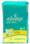
What: Always
Who: Tiana
Why: I�m with Cage. I�m loyal to Always brand pads, but more specifically Always Ultra Thin pads with wings are the only pads to use. They�re so thin you forget you�re wearing anything. Forget risking TSS and just use these and you won�t be sorry.
What: Herbal Essences shampoo & conditioner
Who: Daisha
Why: Esp. the conditioner. A great everyday conditioner. Smells good and untangles my superfine, supertangly hair. My hairdresser was the one who originally recommended it to me (she had to tell me on the sly because she was supposed to be pushing the salon stuff).
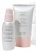
What: Mary Kay Microdermabrasion
Who: Tiana
Why: Nothing has made my skin feel or look so great. I�ve been hooked on it since the first time I sampled it. It�s the product that got me into MK.
What: Mary Kay Liquid Foundation
Who: Tiana
Why: I don�t have to go crazy trying to find the right shade in the make-up aisle at a store only to get it home and find it doesn�t match or I don�t like
it. It has the perfect coverage, color and texture.
What: Great Lash mascara (pink & green tube)
Who: Nearly every Tuffcluff girl and all their friends
Why: It's not clumpy, flaky or nasty and the price is right
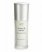
What: Boots No 7 Protect and Perfect serum/Rewind and Refine serum (stronger version of P&P)
Who: Melanie and Daisha
Why: The only anti-aging product we've found that makes a bit of difference (It's a cult phenomenon in the UK). You can only get it at Target in the US
What: Elizabeth Arden Green Tea Skincare Purifying 3 in 1 Cleanser/Toner/ Exfoliant
Who: Melanie
Why: Great for keeping breakouts at bay for both Soren and me. Smells good, feels clean and exfoliates.
What: Revlon Nail Polish
Who: Daisha
Why: A favorite of mine and my friend June's since high school. It goes on smooth and thick for perfect coverage in one coat and seems to last ages.
What: Waxed, minted floss
Who: Scott
Why: Clean and refreshing
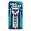
What: Gillette Mach 3 razor
Who: Tiana (this is one of Hyrum's favorites too)
Why: I�ve tried all kinds, even the girl kinds, but when I tried Hyrum�s Mach 3, I had to buy one for myself. I�ve been recommended to other kinds, but
none compare for me. It�s amazing!
What: Farouk Silk Therapy + Enjoy shine spray
Who: Tasha
Why: This is the miracle that cures all shampoo/conditioner shortcomings. Use dime size of therapy after wash/condition; then blowdry with brush and spray LESS THAN than 4 times with shine spray and you will look like a movie star GUARANTEED!!! Caution - too much shine spray will result in greasy look
What: Arm & Hammer baking soda toothpaste
Who: Shira
Why:
What: Body Shop Body Butter
Who: Tasha
Why: Smells so good; great lotion; stands up to my old fav Johnson & Johnson baby lotion
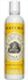
What: Burt�s Bees Baby Bee Buttermilk Lotion.
Who: Tiana
Why: It�s the most heavenly scent you can imagine. I started using it on Talea and can never use any other product because it leaves my babies smelling delicious! All Burt�s Bees products are natural, and addicting to me.
What: Polo Cologne for men
Who: Tasha
Why: Best smelling cologne a man can buy; there must be some pheremone technology in there; however, remember that LESS IS MORE (over-use/abuse is worse than the cheapest nasty stuff)
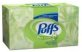
What: Puffs Plus (sometimes labeled Plus Lotion) facial tissues
Who: Tiana
Why: You will never get a red, chapped nose even if you�re blowing all day for a month if you use these and only these tissues. I learned about this brand
while dating Jamie, who had horrible allergies, and he�d only use these or his nose would be hamburger. Don�t blot oil from your face with these because
they�ll leave you looking fuzzy!
Converts: Daisha - I bring them back from the US and don't let anyone use them unless they have a serious cold!
What: Tweezerman tweezers
Who: Daisha
Why: They may seem a bit expensive for tweezers but once you've tried them the price is more than justified!
FUN STUFF
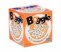
What: Boggle, Scrabble and Risk
Who: The Lanyons
Why: We have a million board games but we always come back to these - boggle for a quick game, scrabble for a lazy afternoon and risk for an entire
weekend
What: Focus Features (no, jk)
Who: Shira
Why:
What: Singstar on Playstation (battle mode)
Who: The Lanyons
Why: Competitive Karaoke - fantastic!
What: Playstation 3
Who: Steve
Why: Great for games, music, movies, photos, home movies, online games. Will "upres" old dvd's, plays blu ray.
What: Guitar Hero 2
Who: Cage
Why: we have ps2 version - can I get a little rock!!! Can play guitar while your friend plays bass, but you need two "controllers" - great for parties!
What: Uno And Skip-Bo
Who: The Lanyons
Why: Our two favorite card games - super fun
What: Finding Nemo, Charlie Brown holiday specials, Grinch Who Stole Christmas, Nightmare Before Christmas,
Pink Panther box set (all the cartoons on 5 discs - priceless!!!), Madagascar, Any Little Einsteins movie or TV episode (NOT BABY EINSTEINS - those are lame!), Charlie & Lola, Disney classics, Charlotte's Web, Christmas Classics (old clay/animated rudolph, Burgermeister Meisterburger, santa etc.)
Who: Tasha
Why: They are our favorite kid's movies/TV programs
What: English Mysteries & BBC Dramas
Who: Mel
Why:
What: Sunrise Walks
Who: Tasha
Why: Nothing like a So. Cal sunrise
FITNESS STUFF
What: The Firm DVDs
Who: Shira
Why: Hard, but well worth it
What: Bryan Kest Power Yoga DVD
Who: Shira
Why: Hard, but well worth it
ARTSY STUFF
What: Sharpie Permanent Markers
Who: Daisha (& Shira too)
Why: One of the handiest pens in the house. I mostly use it for labeling (especially school uniforms).
What: Crayola Crayons/Markers
Who: Daisha
Why: I'm always disappointed if I buy anything else for the kids.
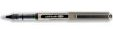
What: Uni-Ball Eye Rollerball Pens
Who: Daisha
Why: My favorite everyday pens (I think they're called "vision" instead of "eye" in the US)
What: Uni-ball ONYX micro or fine pens
Who: Tasha
Why: These are the best, and if you write on your hand it comes off with warm water (will stain other things)
What: Golden acrylic paint
Who: Shira
Why:
WEARABLES
What: Citizen Eco-Drive Watches
Who: Scott (Edward, Daisha and Dakota are recent converts)
Why: Having tried a few I now wouldn�t wear anything else
What: Calvin Klein Underwear
Who: Shira
Why: It's the most comfy
What: Vans
Who: Shira
Why: For Sophia's wide feet
What: The Gap
Who: Shira
Why: For staple clothing
TRANSPORTATION
What: Honda motorcycles
Who: Scott
Why: Wouldn�t ride any other
What: Toyota
Who: Scott
Why: Reliable and economical
Who: Tasha
Why: Loved my landcruiser so much I got a corolla; change the oil every 3000 miles and they're better than any other brand for "no-maintenance factor"
What: Chevy
Who: Steve
Why: American
What: Kline bicycles
Who: Scott
Why: A bit of a connoisseur here, and this is it!
KIDDY STUFF
What: Jogger Stroller
Who: Mel
Why: The only piece of equipment I've consistently use through the years
COMPUTERY STUFF
What: Apple computers
Who: Shira
Why: Like duh, actually Apple anything electronic these days
What: Dell computers
Who: Edward
Why: They use them at Goldman Sachs, and they're picky
What: Fly Lady
Who: Mel
Why: Helps you whip your house in shape
What: Nutrition Data
Who: Mel and Daisha
Why: Comprehensive food breakdowns
What: Travelzoo
Who: Daisha
Why: Great travel deals
What: Amazon
Who: Shira
Why: For anything I really want to find, especially movies
Who: The Lanyons
Why: We use it constantly because none of us are enthused by old fashioned shopping
HAVE YOU TRIED...
...any of these products? Rumor has it that they're good. Do you know? If so, write a review for us!
Lancome Juicy Tubes
Yves Saint Laurent Touche Eclat
Chanel Number 5
Creme de la Mer
BRAND WARS: THE GRUDGE MATCH!!!!!
Cascade with Dawn dishwashing packets (Tiana) vs. Electrasol power tabs (Tasha)
Ben & Jerry's Chocolate Fudge Brownie Ice Cream (Edward) vs.Haagen-Dazs ice cream (Shira) Evidence:It's impossible to have a winner since it's all down to personal taste, but according to kerroncross.blogspot.com, "The packaging for the Ben & Jerry's pint containers is made from recycled, bleach-free paper. The company is supporting research into thermoacoustic refrigeration to minimize the potential negative environmental impact from using ozone-depleting refrigerants. As a whole the company is very eco-friendly and encourages its users and consumers to be the same. And in 2005, Ben and Jerry's opened a store in Austin, Texas, operated by LifeWorks, a community organization that helps at-risk youth and families. The store provides job opportunities for LifeWorks clients. All profits from the store go directly to LifeWorks and Ben and Jerry's does not collect a franchise fee. Whereas H�agen-Dazs is a Nestle brand in the US and Canada - and we all know about Nestle's ethical record." On the other hand, consumersearch.com says, "Best vanilla ice cream. H�agen-Dazs Vanilla is top-picked by taste testers more often than any other flavor or variety of ice cream -- vanilla, chocolate or low-fat. However, some people aren't fond of the dense texture and sweetness of H�agen-Dazs ice cream, preferring vanilla varieties from Dreyer�s instead. (Ben & Jerry's Vanilla is also a top pick, but suffers from the same sweetness/denseness issues.) Note that we were surprised to find that H�agen-Dazs Chocolate doesn't do nearly as well in tests as the Vanilla variety." Verdict:Listen to your conscience
Garnier Fructis shampoo & conditioner (Shira & Cage) vs. Herbal Essences shampoo & conditioner (Daisha) Evidence: Consumersearch.com says, "Reviewers pick Clairol Herbal Essences most as the best shampoo. In blind testing, low-priced drugstore shampoo like Herbal Essences is shown to clean just as well as expensive salon brands. Herbal Essences comes in a variety of formulas, but some experts note that although these formulas are labeled differently, they have nearly identical ingredients, except for some variance in plant extracts, which don't have any effect on hair." Verdict: Herbal Essences
Colgate Fresh Confidence toothpaste (Tiana) vs. Colgate Total plus whitening toothpaste (Daisha) Evidence: There's not much between the two because they're both Colgate, but critics tend to lean toward Daisha's choice. Consumersearch.com says, "Best toothpaste overall: Experts recommend Colgate Total more often than any other toothpaste. According to both the Food and Drug Administration and the American Dental Association, this was the first toothpaste on the market to include the antibacterial ingredient Triclosan, which has been proven effective for fighting gum disease (gingivitis). Total contains another ingredient -- Gantrez -- that allows Triclosan to remain active between brushings, even after you eat or drink." Verdict: Colgate Total (the whitening is just a bonus!) Rebuttal: "I have to disagree with your verdict about Total vs Fresh Confidence toothpaste. I�ve tried both. When I couldn�t find Fresh Confidence at Walmart, I bought Total with whitening, but couldn�t stand it after having used the other. Total�s foaming factor isn�t near so nice, the freshing doesn�t last as long, and its texture isn�t even as good. Total may have fancy ingredients, but mine may too (I�ll have to check), and mine is sooo much better in a blind usage test. Try it and I promise you�ll see what I mean. Plus, Fresh Confidence is whitening too. Clinical testing documents that your breath will stay fresh for a minimum of 3 hours. If you have a problem with bad breath, I�d definitely steer you toward Fresh Confidence with whitening. If you have a gingivitis problem, Total may be better for you."
Sherwin Williams paint (Scott) vs. Kilz paint (Mel & Tiana) Evidence: "I was looking at paint ratings on www.consumerreports.org and found that Kilz, among a few others, is a CR best buy, and it�s ranked 2nd for satin sheen (my favorite), but Sherwin-Williams is dead last in every sheen (of roughly 20 different paints in each sheen), and it�s the 2nd most expensive, so I guess us girls know what�s best after all. Behr paint is said to be the best, but I�ve never tried it personally. They use Behr all the time on the home improvement shows. For semi-gloss, CR says you�ll want either Behr or Dutch Boy. I�ve tried Dutch Boy before and I like that its container is square and plastic like Kilz, and I was satisfied. I�ve never tried the semi-gloss of it though. Since I�m a WalMart shopper, I�ll be getting Kilz satin, as always, and I guess I�ll use the Dutch Boy semi-gloss on my trims. It�s cheaper too!" Verdict: Kilz Rebuttal: From consumersearch.com: "Best EXTERIOR house paint. When asked to identify the best exterior house paint, building and painting contractors name Sherwin-Williams Duration more than any other paint. It's also mentioned as a better alternative when pros are asked about other paints. The major drawback is a high price, but every periodical and Internet how-to article says expensive paints are a good value because they last much longer than economy paints. Duration house paint is guaranteed for as long as you own your house. Experts say Duration applies and bonds better than other exterior paints and hides pre-existing paint or primer."
BUYING GUIDE
Shopping for Baby Stuff By Tiana For me, safety is the biggest issue. If I have a rollover accident, or if I get hit head-on, will my kid�s car seat keep my kid safe? At first when I bought stuff for Talea (jogger, etc), I just bought a good deal. But after the frustration and headaches of cheap crap, I decided to research them. My top four factors (in order of importance) before I make a purchase are safety, ease of use, aesthetics and price. For references, I use:
Consumer Reports.org
Girlfriends Guide to Baby Gear (a book)
Consumer Reviews on different websites
The internet is my best friend when it comes to research
I narrow the results down that I compile from these sources, then I try to find them in a store so I can look at it and see what it�s really like in real life, and try it out.
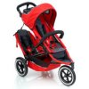
My top recommendation for stroller/jogger combo:
If you�re going to have more than one child, and they�ll both need to ride:
Phil and Ted�s sport double buggy: (4.75 out of 5 stars) I got the E3 when it came out, but it�s discontinued because they�ve added a safety guard to the wheels in the new sport double that I wish mine had. It comes in a wide variety of colors, and it converts from a single to a double, but it�s never wider or longer than a single. For Talea, I had a car seat/stroller combo, and a jogger, and an umbrella stroller. When Hyatt came along, I bought the E3 and this took the place of all of these, plus they both could ride, so I sold the others. It lays flat for a newborn while the older child rides up top in front. Then when the baby can sit, it sits in the back while the older child rides in front. It�s the best $$ I ever spent on my kids, but it was spendy. Pros: Too many to mention them all, but here�s some: Converts from single to double, lots of colors to choose from, accommodates new infant, lots of accessories (the saddle bags, rain shield and sun shade are worth the extra investment), folds easily and compactly for a double stroller, front wheel can be free or locked, Cons: Expensive, doesn�t come with a hand brake for downhill walking/jogging, the back kid can kick the front kid in the hind end to the point of annoyance, no cup holder (but just buy a BOB one that straps to the handlebars and you�re good to go. It has 2 cup holders and a pocket for stuff, plus it provides shade for the kid in back.), hard to find one to try before you buy Where to buy: check it out at www.philandteds.com, but it�s in New Zealand, so just price shop on Google or something and get it in the states. By the way, the price only varies by cents no matter where you look, unless you get it used on ebay, so I found a site that gave a couple of accessories with it for cheaper. I can�t remember what it was, so just hunt around.